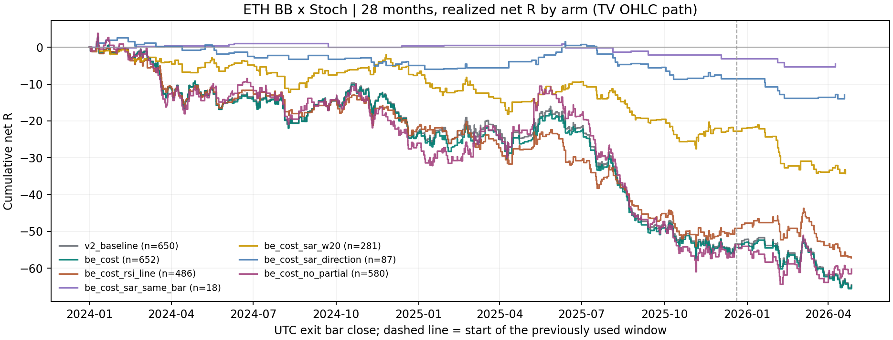

把窗口从 4.4 个月拉到 28 个月（245,088 根 5m，2023-12-31 → 2026-04-30）， 七个事前冻结的组没有任何一组做到费用后为正。 参照组（保本含 0.2% 成本）652 笔完整交易， 净 -64.85R，每笔 -0.0995R， PF 0.78；原 v2 是 650 笔、 净 -64.51R、每笔 -0.0992R。
最关键的一个数：参照组的毛收益（完全不计手续费）-21.37R，仍然是负的。 盈亏平衡费率 f* = -7.87 bp/边—— 费率为负意味着把手续费降到 0 也仍然亏，成本不是主因，规则本身是负期望。
data/kline_deep_5m/okx_ETH_USDT_SWAP_5m_245088.csv，245,088 根， 2023-12-31 16:00:00+00:00 → 2026-04-30 16:00:00+00:00。缺口 0、重复 0。end > 2026-05-01 硬门未放宽。| 组 | 完整交易 | 净 R | 每笔净 R | 净胜率 | PF | 回撤 R | 最大连亏 | 配对数 | 配对超额 R/笔 | 月块 p |
|---|---|---|---|---|---|---|---|---|---|---|
| v2 原版（保本价=入场价） | 650 | -64.51 | -0.0992 | 50.77% | 0.78 | 67.94 | 14 | 645 | -0.0085 | 0.596 |
| 参照：保本含 0.2% 成本 | 652 | -64.85 | -0.0995 | 52.15% | 0.78 | 68.28 | 8 | 647 | -0.0075 | 0.586 |
| ＋RSI 线区域门 | 486 | -57.17 | -0.1176 | 50.62% | 0.74 | 57.70 | 11 | 483 | -0.0330 | 0.801 |
| ＋◈ 同根 | 18 | -4.54 | -0.2521 | 50.00% | 0.40 | 6.30 | 4 | 18 | -0.0729 | 0.661 |
| ＋◈ 最近 20 根内 | 281 | -34.25 | -0.1219 | 50.89% | 0.72 | 35.38 | 9 | 280 | -0.0161 | 0.615 |
| ＋SAR 方向一致 | 87 | -12.92 | -0.1485 | 49.43% | 0.66 | 16.54 | 7 | 87 | -0.0541 | 0.728 |
| ＋取消平半（单仓跑到底） | 580 | -60.27 | -0.1039 | 43.10% | 0.82 | 68.18 | 13 | 572 | +0.0047 | 0.465 |
| v2 原版（保本价=入场价）·先走逆向 | 650 | -64.51 | -0.0992 | 50.77% | 0.78 | 67.94 | 14 | 645 | -0.0087 | 0.600 |
| 参照：保本含 0.2% 成本·先走逆向 | 652 | -64.85 | -0.0995 | 52.15% | 0.78 | 68.28 | 8 | 647 | -0.0075 | 0.586 |
每组只比参照多一个变化；门只过滤新入场，反向退出一律用未过滤信号。 两条成交路径在本样本上仍逐笔相同，敏感性零分辨力。 不得挑其中较好的一组当成绩：它们是同一批数据上的并列诊断，不是候选筛选。

图里虚线是"此前已看过的窗口"的起点。七条线在 28 个月里没有一条站上 0 轴； 样本少的组（◈ 同根 18 笔、SAR 方向 87 笔）曲线平只是因为交易少，不是因为稳。
| 门 | 放行/可用 | 放行率 | 做多放行 | 做空放行 |
|---|---|---|---|---|
| RSI 线区域 | 682/1085 | 62.86% | 291/484 | 391/601 |
| ◈ 同根 | 18/1085 | 1.66% | 7/484 | 11/601 |
| ◈ 最近 20 根内 | 357/1085 | 32.90% | 155/484 | 202/601 |
| SAR 方向一致 | 90/1085 | 8.29% | 29/484 | 61/601 |
样本内 ChartPrime 强信号 ◈ 共出现 2335 次（多）/ 2332 次（空），但要和 BB 带外＋Stoch 极区撞在同一根上极其罕见。
对参照规格下每个可用信号独立回放一笔（忽略占仓），按四个门各自的标签分组， 9999 次种子化标签置换，单侧检验：
| 门 | 放行笔数 | 放行 R/笔 | 拦截笔数 | 拦截 R/笔 | 差值 | 置换 p |
|---|---|---|---|---|---|---|
| RSI 线区域 | 681 | -0.1094 | 403 | -0.1115 | +0.0021 | 0.494 |
| ◈ 同根 | 18 | -0.2521 | 1066 | -0.1078 | -0.1443 | 0.737 |
| ◈ 最近 20 根内 | 357 | -0.1246 | 727 | -0.1032 | -0.0214 | 0.648 |
| SAR 方向一致 | 90 | -0.1243 | 994 | -0.1089 | -0.0154 | 0.556 |
共 1085 个事件，其中 1 笔末端未平仓已排除。 置换检验只回答"标签有没有信息"，不是收益证明；事件可重叠，不构成可执行账户。
| 组 | 每边 0bp | 每边 2bp | 每边 5bp | 每边 10bp | 盈亏平衡费率 f* |
|---|---|---|---|---|---|
| v2 原版（保本价=入场价） | -21.16 | -29.83 | -42.84 | -64.51 | -7.72 bp |
| 参照：保本含 0.2% 成本 | -21.37 | -30.07 | -43.11 | -64.85 | -7.87 bp |
| ＋取消平半（单仓跑到底） | -21.56 | -29.30 | -40.91 | -60.27 | -10.71 bp |
费用不改变止损、止盈与成交价，因此这几档是从同一条冻结价格路径精确重算的，不是重跑。 f* = Σ毛盈亏 / Σ成交名义；**f* 为负 = 免手续费也亏**。
| 组 | 完整交易 | 净 R | 每笔净 R | 净胜率 | PF | 回撤 R | 最大连亏 | 配对数 | 配对超额 R/笔 | 月块 p |
|---|---|---|---|---|---|---|---|---|---|---|
| 本轮新看的 23 个月 | 577 | -54.39 | -0.0943 | 52.86% | 0.79 | 60.14 | 8 | 577 | -0.0135 | 0.637 |
| 此前已看过的窗口 | 75 | -10.46 | -0.1395 | 46.67% | 0.72 | 13.55 | 6 | 70 | +0.0414 | 0.188 |
| 多头 | 307 | -26.12 | -0.0851 | 51.47% | 0.82 | 31.98 | 7 | 306 | -0.0111 | 0.581 |
| 空头 | 345 | -38.73 | -0.1123 | 52.75% | 0.74 | 41.61 | 7 | 341 | -0.0043 | 0.548 |
| 2024 | 287 | -22.83 | -0.0796 | 55.05% | 0.81 | 27.48 | 8 | 287 | -0.0084 | 0.565 |
| 2025 | 294 | -30.11 | -0.1024 | 51.36% | 0.78 | 40.13 | 7 | 294 | -0.0121 | 0.561 |
| 2026 | 71 | -11.91 | -0.1678 | 43.66% | 0.68 | 13.55 | 6 | 66 | +0.0166 | 0.375 |
| 最终退出原因 | 笔数 | 其中已平半 | 净 R 合计 |
|---|---|---|---|
| 初始止损 | 266 | 0 | -283.74 |
| 完整反向信号退出 | 178 | 178 | +180.49 |
| 平半后保本 | 162 | 162 | +45.85 |
| 平半时新保护价已被越过 | 46 | 46 | -7.45 |
其中"平半时新保护价已被越过"是 Owner 本轮批准的保本含成本带来的已知副作用： 多单保本价抬到入场价上方后，触轨价若还没超过入场价+0.2%，尾仓当场就可成交。 这是规则的直接后果，已逐笔计数。Owner 本轮没有批准"止盈不许挂在亏损侧"， 所以动态止盈漂到入场价另一侧导致的亏损仍然照常发生。
源码冻结提交：7bbf45b073fbfa6ee3b6e635132f1780b4d17286。只读前缀 SHA256：bb841dffecdcec58a93330aa1560e513d8b628a8a6ceb47ef4d4595d38cb0ee0。 互证源 SHA256：0f164249ef356b2fc7118078b6d9379b0da4f507e0ef7cb6aef0ca0cc5e67d01。验证记录：{"focused_tests": {"command": ".venv/bin/python -m pytest tests/evaluation/test_bb_stoch_longrun_study.py tests/evaluation/test_bb_stoch_parameter_replay.py tests/evaluation/test_parabolic_rsi_sar.py tests/evaluation/test_bb_stoch_rsi_study.py tests/evaluation/test_bb_stoch_replay.py -q", "passed": 43, "failed": 0}, "broad_gates": {"command": ".venv/bin/python -m pytest tests/boundaries tests/causality tests/parity -q", "passed": 468, "failed": 7, "causes": {"existing_artifact_missing_source_commit": 5, "existing_migration_hash_mismatches": 2}, "scope": "unchanged pre-existing failures already disclosed in HANDOFF; unrelated to this experiment and not bypassed"}, "frozen_engine_parity": "parameterized defaults still reproduce bb_stoch_replay trade dictionaries exactly (test_default_features_and_replay_dicts_match_frozen_engine)", "source_cross_check": {"other": "data/kline_fetched/okx_ETH_USDT_SWAP_5m_57699.csv", "other_sha256": "0f164249ef356b2fc7118078b6d9379b0da4f507e0ef7cb6aef0ca0cc5e67d01", "overlapping_bars": 37800, "max_abs_ohlc_difference": 0.0, "rows_differing": 0}, "economic_ledger_checks": 25457, "signflip_independent_recheck": {"partition": "be_cost/tv/all", "saved_p": 0.5856, "recheck_p": 0.5844, "draws": 200000}, "known_benign_warning": "numpy reports divide-by-zero/overflow FP flags from the sign-flip matmul on this BLAS build; every produced p is finite and within [0,1] and an independent 200k-draw recheck agrees", "native_tradingview_parity": false, "pine_saved_to_tradingview": false, "parameter_search": false, "holdout_consumed": false}。
cd /Users/zhangzc/fable-trading
.venv/bin/python -m pytest tests/evaluation/test_bb_stoch_longrun_study.py \
tests/evaluation/test_bb_stoch_parameter_replay.py tests/evaluation/test_parabolic_rsi_sar.py \
tests/evaluation/test_bb_stoch_rsi_study.py tests/evaluation/test_bb_stoch_replay.py -q
.venv/bin/python -m src.data.fetch_okx --symbols ETH_USDT_SWAP --bar 5m \
--archive-monthly-start 2024-01 --archive-monthly-end 2026-04 \
--archive-max-exclusive 2026-05-04T00:00:00Z --out-dir data/kline_deep_5m
.venv/bin/python -m yoyo.evaluation.bb_stoch_longrun_study
.venv/bin/python -m yoyo.evaluation.bb_stoch_longrun_report
docs/HOLDOUT_LEDGER.md 记账。